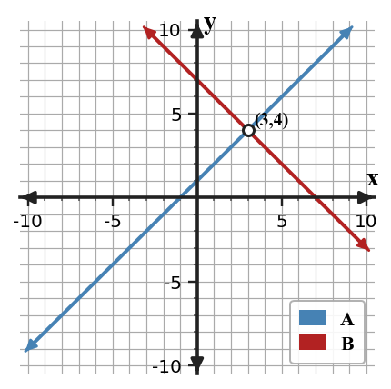
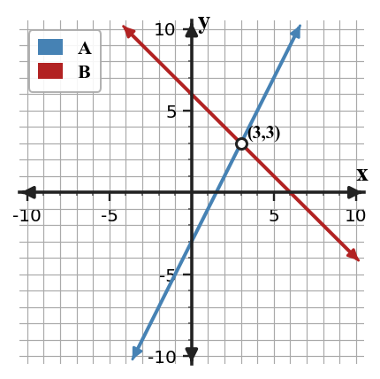
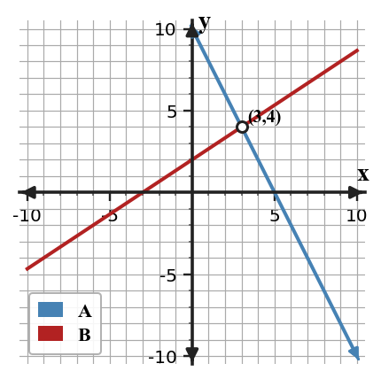

Graphing and Elimination
Mathematical idea: The solution to a system is the point or statement that makes every equation in the system true.
Today you will connect graphs, tables, and elimination work for systems of equations. You will also decide when a system has one solution, no solution, or infinitely many solutions.
Learning Target
Learning Target: Students will solve systems graphically and by elimination while interpreting the meaning of different solution types.
I can statements
- I can construct graphical representations of systems and connect intersection points to solutions.
- I can use elimination to solve systems and interpret the solution type.
- I can determine whether a system has one solution, no solution, or infinitely many solutions from algebraic and graphical evidence.
What's To Come
This is a long-range preview for future lessons. Do not solve it today. Instead, annotate it individually. Circle anything familiar, underline symbols or directions that seem important, and write notes about what information you think will be needed later.
As you annotate, ask yourself: What parts (words, symbols, graphs) do you KNOW? What parts look FAMILIAR? What parts look like jibberish?
A school fundraiser can rent Table Plan A for \$40 plus \$6 per table or Table Plan B for \$16 plus \$9 per table.
- Define variables and write a system that models the two plans.
- Solve the system and interpret the break-even point.
- Write one additional sentence explaining which plan is cheaper before and after the break-even point.
Intro
Directions
Read the introduction aloud with a partner or in a small group. As you read, annotate the text by highlighting important ideas, circling key vocabulary, and writing short notes about connections, questions, or predictions in the margins.
Paragraph A. A system of equations asks you to think about two rules at the same time. On a graph, the crossing point is the ordered pair that makes both equations true. That point belongs to both lines, so it is the solution of the system.
Paragraph B. Algebra gives another way to find the same solution without relying only on a graph. In elimination, you add or subtract equivalent equations so one variable cancels. The remaining equation helps you find one coordinate, and then substitution back into either original equation gives the other coordinate.
Paragraph C. Sometimes two lines do not cross inside the graph window, and sometimes they do not cross at all. If two rules have the same slope and different intercepts, they stay the same distance apart. If every point on one line is also on the other, the graph looks like one line even though two equations were written.
Paragraph D. Useful representations for systems include two-line graphs, value tables, equations in standard form, and solution-type statements. A strong solution names the ordered pair and explains why it satisfies both equations.
Paragraph E. In real situations, systems often compare two plans, two costs, or two rates. The intersection can mean a break-even point, a tie, or the moment when two conditions are true together.
Stop and Discuss
- What does the crossing point of two lines in a system represent?
- What does elimination try to remove from a system?
- Why might two different-looking equations sometimes represent the same line?
The point where two lines meet answers the question: "Which ordered pair makes both equations true?"
$$\begin{aligned}y&=x+1\\y&=-x+7\end{aligned}$$| $x$ | $y=x+1$ | $y=-x+7$ |
|---|---|---|
| 2 | 3 | 5 |
| 3 | 4 | 4 |
| 4 | 5 | 3 |

Context: At $x=3$, both rules give $y=4$, so $(3,4)$ is the ordered pair that satisfies both equations.
Example 1: Interpreting a crossing point
Two school groups are tracking points during a game. Team A's score can be modeled by $y=x+2$, and Team B's score can be modeled by $y=-2x+11$.
- Set the two expressions equal to find the ordered pair where the scores are the same.
- Explain what the ordered pair means in this situation.
- How would your interpretation change if the two lines never crossed?
You Try It 1: Interpreting another crossing point
Two streaming plans have monthly costs modeled by $y=5x+10$ and $y=8x+1$, where $x$ is the number of movie rentals.
- Find the ordered pair where the two costs are equal.
- Explain what each coordinate means in this context.
- If a person rents more than that number of movies, which plan should they compare more carefully? Explain.
Stop and Discuss
- How did the Example and You Try It show that an intersection has both an $x$-value and a $y$-value?
- Why is an ordered pair stronger evidence than saying "the lines cross"?
To graph a system, put both equations on the same coordinate plane and look for shared points.
$$\begin{aligned}y&=2x-3\\y&=-x+6\end{aligned}$$| Equation | Easy point 1 | Easy point 2 |
|---|---|---|
| $y=2x-3$ | $(0,-3)$ | $(3,3)$ |
| $y=-x+6$ | $(0,6)$ | $(3,3)$ |

The shared point $(3,3)$ is evidence from the graph and the table.
Example 2: Graphing both equations
Graph the system $y=-x+8$ and $y=2x-1$ on the same axes.

- Make a table or identify two points for each line.
- Graph both lines and estimate the intersection point.
- Substitute your ordered pair into both equations to check it.
You Try It 2: Graphing a new system
Graph the system $y=x+1$ and $y=-2x+10$ on the same axes.
- Find two points for each line.
- Graph both lines and state the intersection point.
- Check the point by substituting into both equations.
Stop and Discuss
- What was the same about graphing both systems, even though the equations were different?
Example 3: Predict, then check
A tutoring app compares two point totals: $y=4x-5$ and $y=x+7$.
- Set the expressions equal and solve for $x$.
- Find the matching $y$-value and write the ordered pair.
- Use a quick graph or table to explain how you know the ordered pair is reasonable.
You Try It 3: Set equal before graphing
A science club compares $y=3x+2$ and $y=-x+14$.
- Set the expressions equal and solve for the input where the outputs match.
- Write the complete ordered pair.
- Describe one graph feature that should appear if your algebra is correct.
Stop and Discuss
- How did setting expressions equal help you predict the graph before drawing it?
Elimination changes the system into an equivalent one where one variable cancels.
$$\begin{aligned}2x+y&=10\\-2x+3y&=6\\4y&=16\end{aligned}$$| Step | Meaning |
|---|---|
| $4y=16$ | The $x$-terms canceled, so solve for $y$. |
| $y=4$ | Use either original equation to find $x$. |
| $(3,4)$ | The ordered pair satisfies both equations. |

The graph confirms that the elimination solution is also the intersection point.
Example 4: Critiquing an elimination solution
A student adds the equations below and says the answer is $y=3$.
$$\begin{aligned}3x+2y&=21\\-3x+y&=-3\end{aligned}$$Student claim: "The system is solved because the variables canceled and I got a value for $y$."
- Add the equations and decide whether the student's value for $y$ is correct.
- Identify the missing step after finding $y$.
- Give the complete ordered-pair solution and check it in both original equations.
You Try It 4: Fixing an elimination answer
A student solves the system below and stops after finding $x=5$.
$$\begin{aligned}x+4y&=17\\3x-4y&=3\end{aligned}$$Student claim: "The solution is $x=5$, so I am done."
- Use elimination to verify the value of $x$.
- Find the missing $y$-coordinate.
- Explain why a single coordinate is not a complete solution to this system.
Stop and Discuss
- What step turns an elimination value for one variable into a complete ordered pair?
Summary
A system of equations is solved when you find what makes both equations true at the same time.
On a graph, the solution is the intersection point; in elimination, the solution appears after one variable cancels and the other coordinate is found.
A common error is stopping after finding only one coordinate or naming a point that satisfies only one equation.
Strong understanding means you can use a graph, a table, and algebra to explain the same solution type.
Common Mistakes
- Calling one coordinate the solution. Why it is tempting: elimination often gives one variable first. What to check instead: substitute back to write an ordered pair.
- Graphing on separate axes. Why it is tempting: each line may look correct by itself. What to check instead: put both lines on the same coordinate plane.
- Forgetting solution types. Why it is tempting: one solution is the most common case. What to check instead: compare slopes and intercepts or elimination results.
- Checking only one equation. Why it is tempting: the point may fit the line you used first. What to check instead: substitute into both original equations.
- Misreading the intersection. Why it is tempting: grid lines can be crowded. What to check instead: estimate carefully and confirm algebraically.
Optional Future Task Reflection
Look back at the future task. Do not solve it yet. Highlight one part that makes more sense now than it did at the beginning. Circle one part that still feels unfamiliar. Write one sentence about what representation you would look at first.
For the system $y=2x+1$ and $y=-x+7$, what does the ordered pair where the two lines cross represent?
Graph the system on the same axes, then state the point of intersection.
What is one idea about graphing and elimination for systems you understand better now than at the start of class? Write at least one complete sentence.
What is one thing about graphing and elimination for systems you still want to understand or practice? Be specific — name the idea, not just "everything."